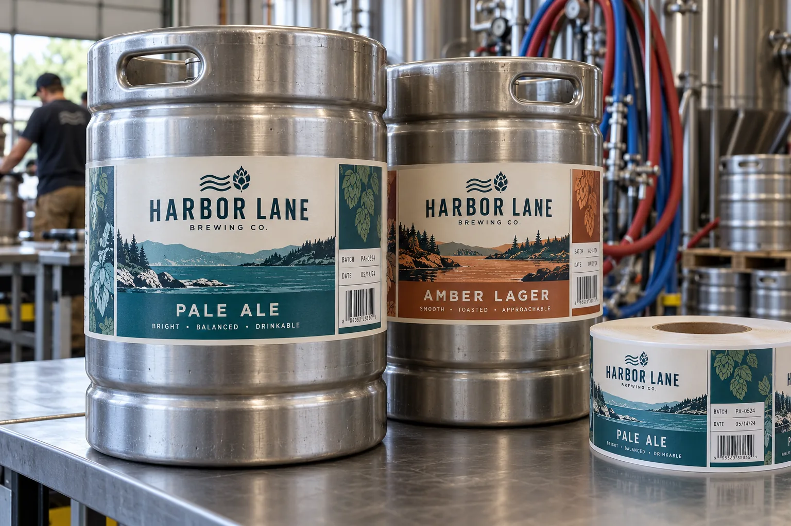

One label has two opposing jobs
A brewery may ask me for a tough label because its kegs travel through cold rooms, trucks and bars. Then the same keg returns to be cleaned and refilled. If the label survives everything but takes laborious scraping to remove, it was not a successful returnable-keg specification.
Avery Dennison describes a paper wash-off adhesive used on beer kegs and steel surfaces. That demonstrates that the two-job design is possible; it does not prove our chosen face, print and adhesive will pass a particular brewery wash. UPM's removable-adhesive overview likewise separates secure use from clean removal.
Keep the operational identity easy to find
Imagine a composite brewery filling pale ale and amber lager into the same stainless fleet. The keg needs a bold product name, a lot field and a code placed where a warehouse worker can find it without turning a heavy vessel through several rotations. I would ask where the keg is gripped, stacked and tapped before choosing the label's height.
A composite keg-pool operator has another problem: different breweries return kegs to one wash plant. It cannot approve a label on one hot-water bench test and assume all wash routes are identical. Water chemistry, time, temperature and mechanical action should be recorded for the actual line; the pool operator should define what clean removal means in its own inspection process.
Trial the entire keg journey
Apply the label to the specified clean, dry steel area, away from welds, rolled chimes, handles and valves. Check legibility and edge lift after the expected wet and cold handling. Then run the keg through the brewery's real removal and wash sequence and inspect for remaining face or adhesive. If a decorative brand label and a temporary lot label have different life cycles, consider specifying them separately rather than forcing one stock to do both.
| Stage | Decision |
|---|---|
| Application | Steel condition and smooth placement area |
| Distribution | Cold, wet handling and code readability |
| Return | Old label identification and removal timing |
| Wash | Residue, cleanup effort and next-fill readiness |
Our buying view
Specify the wash before the finish
I would choose a label that a brewery can remove reliably over a prettier one that survives one trip and damages throughput on every return. The real unit cost includes the next fill.
Send the reuse specification
- Actual keg model and intended label zone.
- Filling, storage, distribution and bar-handling conditions.
- Wash process and acceptance criteria for residue.
- Beer SKU, lot-code and scanning requirements.
Compare returnable glass bottle labels to see why removal depends on the whole process, and beer bottle labels for a different brewery use case.
Frequently asked questions
Can a bottle wash-off label be used on a steel keg?
Do not assume so. Steel surface, handling and wash process differ from returnable glass; trial the specified construction on actual kegs.
Should a keg label be permanent?
For a returnable keg, the removal step may matter as much as transit adhesion. Define the intended reuse and wash cycle first.
What information belongs on the keg label?
Plan the beer identity, batch or filling information and any operational code required by the brewery and distributor, then confirm scan location.
Related buyer guides
Review your label specification
Send package photos, label dimensions, material details, quantity and application conditions. Include good and failed samples where possible so the discussion starts with evidence.